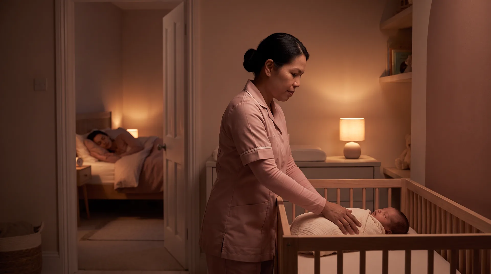

Mother and baby

Hands-on support for your baby throughout the day so you can rest completely. Your dedicated specialist takes care of your newborn while you nap, recover, and bond, and is on hand to accompany you and your baby on outings.